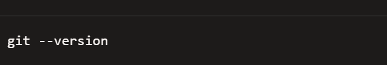
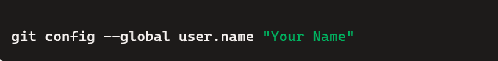
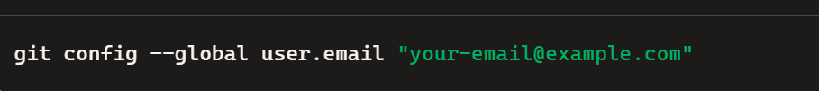
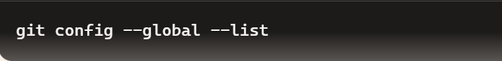

GitHub Tutorial
If you're just starting with Git and GitHub.Here is some guide to set up and running in Windows.
- Install Git
- Download Git from the official Git website.
Click here to download
- Follow the installation wizard accordingly.
- Set Up Git
- Open your terminal or command prompt.
- Type git --version to ensure Git is installed correctly.

- Configure your username and email.


- Verify your setup.

- Download Visual Studio Code and install accordinly.
Click here to download.
- Create a GitHub account.
- If you have github account already, you can simply login.If you have not follow the step below.
- Go to the GitHub website.
Go to the site
- Click on the "Sign up" button in the top-right corner.
- Enter your email address,then create a username and password.
- You'll need to verify your email address by clicking the link GitHub sends to your inbox.
- Once signed in, you can create repositories, explore other's projects and start using git to collaborate.
- To create the new repository by clicking the "+" icon in the top-right corner.
- Then provide new repository name and click on add readme.md and click create repository.
- Clone a repository
- Use the following command to clone a repository to your local machine.
- Basic Git Commands
- Track changes: git add . =>(for all files)
- git add .filename =>(For specific)
- Commit Changes: git commit -m "Your commit message"
- Push changes to GitHub:git push origin main